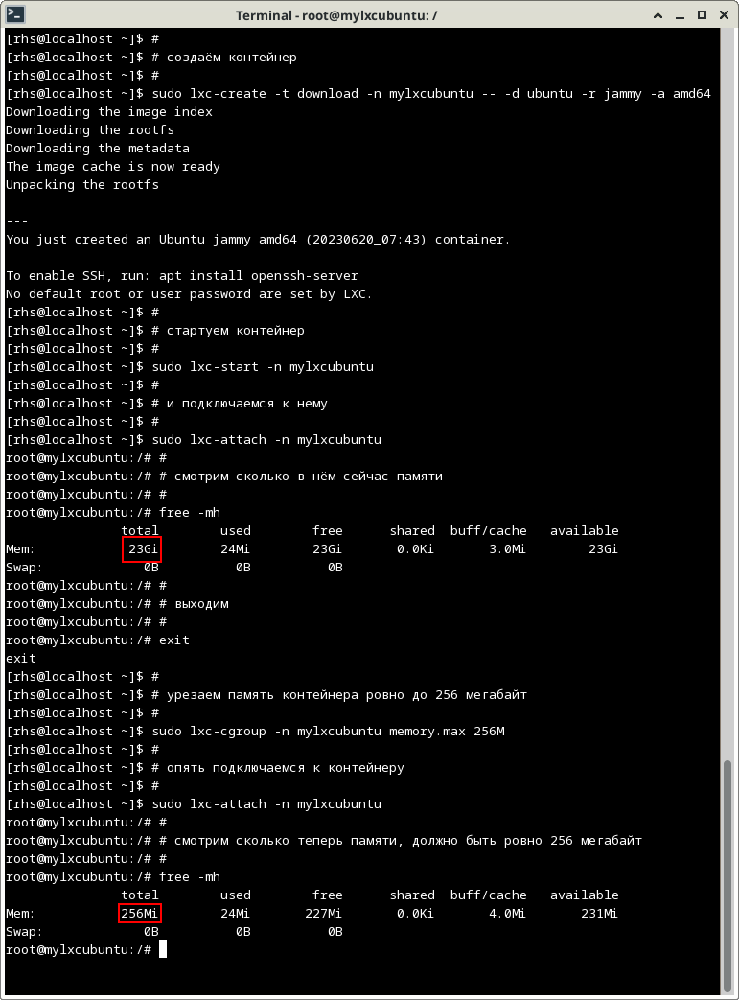

LXCСкриншот со всеми операциями:
настроить автоматическую маршрутизацию между контейнерами. Адреса можно взять:
10.0.12.0/24 и 10.0.13.0/24.
e.x.
sudo lxc-create -n test123 -t ubuntu -f /usr/share/doc/lxc/examples/lxc-veth.conf
А вот тут сколько я не бился сеть мне поднять так и не удалось ;-( Всё время получалось лишь "connect: Network is unreachable"
Ну хоть первое задание сделал, а про второе на семинаре было сказано что его делать необязательно. Но я всё равно пробовал, целый день убил. Но так ничего и не вышло.